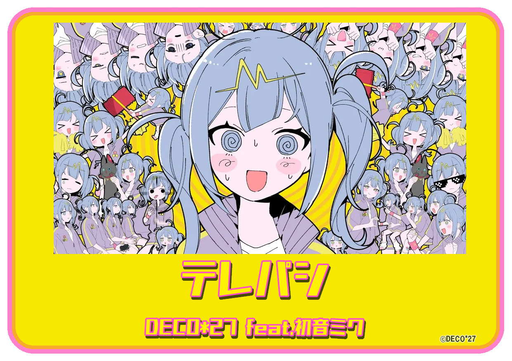

2025年08月07日
カテゴリー : 太鼓の達人
2025/8/14（木) 太鼓の達人 ニジイロ プラス Ver. アップデートのお知らせ（「段位道場外伝」 最新情報！！）
みなさん、こんにちは！
お知らせ担当の１１号です。
電力表示機能付きのType-Cアダプタをゲットしました！
モバイルモニタが電力不足（？）で点いたり点かなかったりして、やきもきしてたんですよね～
嬉しくなって４個ゲットしたので、周りで困っている人がいたら貸してあげようと思います♪
楽しいお知らせはもっとたくさんありますよ～☆彡
それではスタート！
■ 次回アップデートは、8/14（木）

アップデート日から遊べる新曲はコチラ！！
▼ ポップス ▼
YAJU&U ／ モチモチ
▼ アニメ ▼
ときめきエクスペリエンス！ ／ 「バンドリ!」より
▼ ボーカロイド™曲 ▼
テレパシ ／ DECO*27 feat.初音ミク .

.
※ 日本版以外へは後日の楽曲収録を予定しています。
※ 一部の楽曲は日本のみの収録です。
※ 一部の楽曲について、一部の国や地域のみで収録の場合があります。
■ 段位道場外伝 最新情報！
みなさんこんにちは！太鼓チームのエトウです！
TWCS2024決勝大会から、早半月。
時の過ぎるスピードがこわするぎドン！
.
今年も、「人段位」の公開に向けて、
恒例の過去の本編お題を外伝として、以下のお題が8/15（金）から復刻登場となります！
.
▼「ニジイロプラスの挑戦状」シリーズとして３お題
・ニジイロプラスの挑戦状#1
・ニジイロプラスの挑戦状#2
・ニジイロプラスの挑戦状#3
.
お題に挑戦する方は、段位道場のお題をえらぶ画面で、
対応するお題のコードを、ゲーム機のコードリーダーにかざしてくださいね！
.
引き続き、こまめな手の消毒、手洗い・うがいなどなどで、衛生を保ちつつ、太鼓の達人をお楽しみくださいね！
みんなで楽しく太鼓の達人をプレイしてくださいね♪